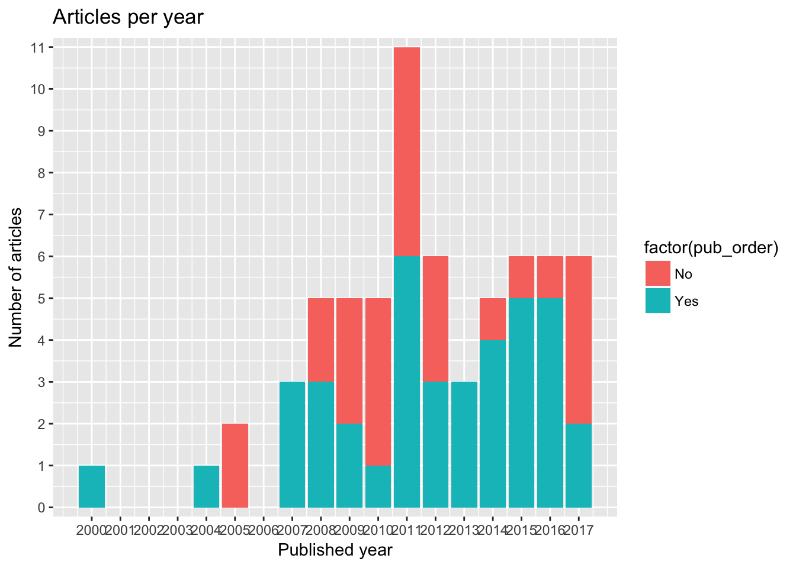
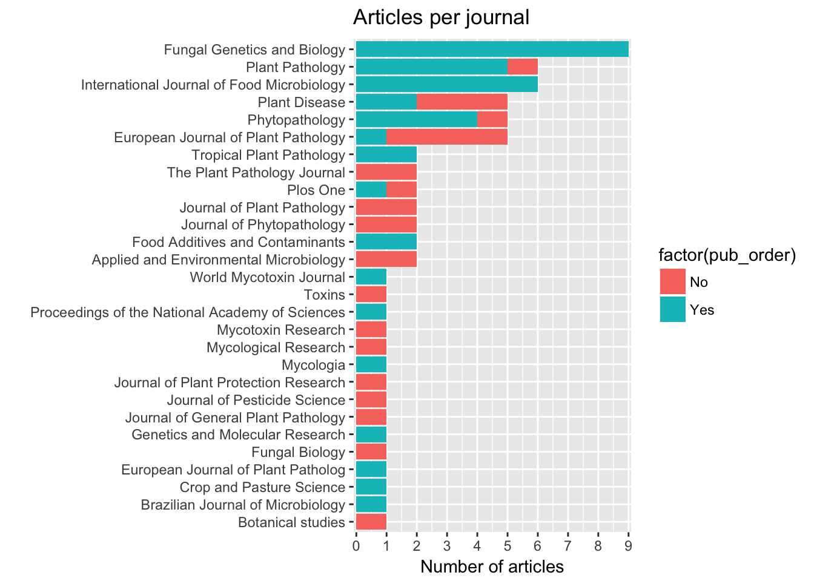
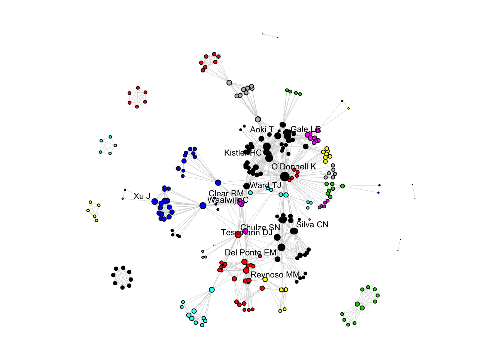

Bibliographic data were obtained from peer-reviewed articles (n = 39) which were indexed as a bibliographic source for the information on the FGSC isolates in our database. The indexed articles were published from 2000 to 2017. Follows a summary for these data.
The number of articles published per year ranged from 1 to 6. The year with most number of articles was 2011
articles %>%
ggplot(aes(year))+
geom_bar()+
scale_y_continuous(breaks=seq(0, 11, 1), expand=c(0.02, 0))+
scale_x_continuous(breaks=seq(2000, 2017))+
labs(y = "Number of articles", x = "Published year", title = "Articles per year")
The articles were published in 15 scientific journals. The journal with most number of publications was Fungal Genetics and Biology with 9 articles, followed by International Journal of Food Microbiology (6 articles) and Plant Pathology (5 articles).
articles %>%
ggplot(aes(reorder(journal_name, journal_name, function(x) length(x))))+
geom_bar()+
scale_y_continuous(breaks=seq(0,10), expand=c(0.01, 0))+
coord_flip()+
labs(y = "Number of articles", x = "", title = "Articles per journal")
A network analysis was conducted to identify the connections among the authors and the scientific communities. For such, we need to build an edge list, or all pairs of occurrences of two authors in a same publication. Let’s see below the first 10 pairs or authors. The whole list has almost one thousand pairs.
library(purrr)
library(purrrlyr)
authors_net <- articles %>% select (6:19)
author_list <- flatten(by_row(authors_net, ..f = function(x) flatten_chr(x), .labels = FALSE))
author_list <- lapply(author_list, function(x) x[!is.na(x)])
# create the edge list
author_edge_list <- t(do.call(cbind, lapply(author_list[sapply(author_list, length) >= 2], combn, 2)))
author_edge_list[1:10, ]## [,1] [,2]
## [1,] "O’Donnell K" "Kistler HC"
## [2,] "O’Donnell K" "Tacke BK"
## [3,] "O’Donnell K" "Casper HH"
## [4,] "Kistler HC" "Tacke BK"
## [5,] "Kistler HC" "Casper HH"
## [6,] "Tacke BK" "Casper HH"
## [7,] "O’Donnell K" "Ward TJ"
## [8,] "O’Donnell K" "Geiser DM"
## [9,] "O’Donnell K" "Kistler HC"
## [10,] "O’Donnell K" "Aoki T"Within an authorship network, co-authors (same article) are linked together. Authors from this group can be connected to authors in another publication whenever they are co-authors in another article. Therefore, two articles can be linked by a common author. Each author is then considered a node in the network and the connections between them are the edges. There are several statistics to calculate in a network analysis.
For now, let’s visualize the authorship network and the community structure which was defined via a function that tries to find densely connected subgraphs, also called communities, via random walk algorithm. The idea is that short random walks tend to stay in the same community. In the network below, there are 15 communities or subgraphs which are represented by distinct colors.
# igraph
library(igraph)
net=graph.edgelist(as.matrix(author_edge_list), directed=FALSE)
degree <- data.frame(degree(net))
#summary(degree$degree.net.)
between <- data.frame(round(betweenness(net), 1))
page <- data.frame(page_rank(net)$vector)
close <-data.frame(round(closeness(net), 10))
eigen <- data.frame(round(evcent(net)$vector, 5))library(network)
library(intergraph)
# Clusters
wc <- cluster_walktrap(net)
# Modularity
mod <- modularity(wc)
ms <- membership(wc)
net_stat <- asNetwork(net)
#png("network1.png", res = 600, width = 4000 , height = 4000, units="px")
set.seed(1003)
par(mar=c(0,0,0,0))
plot.network(net_stat, vertex.cex= 0.05 + 0.25*log(graph.strength(net)), label =ifelse(degree(net)>24,V(net)$name,NA), label.bg = "NA", label.col = "black", edge.col = "lightgray", edge.lty = 0.5, label.cex = 0.7, displaylabels = TRUE, vertex.col = membership(wc), jitter = T, edge.len = 0.2, boxed.labels=T, label.border="NA", pad=1.2)
#dev.off()An interactive graph allows to navigate and visualize the connection among the authors. We use a function of the networkD3 package to build the plot.
Open the network in another page
library(networkD3)
netD3 <- simpleNetwork(edge_df, zoom = T,
fontFamily = "Arial",
fontSize = 13,
charge = -200,
linkColour = "lightgrey",
linkDistance = 80,
nodeColour = "black",
opacity = 1
)
netD3 saveNetwork(netD3, file = 'network-FGSC.html')There are several statistics to compute at the network, node and edge level.
library(broom)
# Transitivity
trans <- transitivity(net, type = "global")
# Degree
deg <- degree(net)
deg <- tidy(deg)
deg2 <- deg %>% group_by(names) %>%
arrange(desc(x)) %>% head(20)
# Betweenness
bet <- betweenness(net, normalized = TRUE, directed = FALSE)
bet <- tidy(bet)
bet2 <- bet %>% group_by(names) %>%
arrange(desc(x)) %>% head(20)
# Eigenvector centrality
eigen <- eigen_centrality(net)
eigen1 <- tidy(eigen$vector)
eigen2 <- eigen1 %>% group_by(names) %>%
arrange(desc(x)) %>% head(20)
# Page rank centrality
rank <- page.rank(net)
rank1 <- tidy(rank$vector)
rank2 <- rank1 %>% group_by(names) %>%
arrange(desc(x)) %>% head(20)
# Closeness centrality
close <- closeness(net)
close1 <- tidy(close)
close2 <- close1 %>% group_by(names) %>%
arrange(desc(x)) %>% head(20)
# Clusters
wc <- cluster_walktrap(net)
# Modularity
mod <- modularity(wc)
ms <- membership(wc)
# clustering edge betweenness
eb <- cluster_edge_betweenness(net)Transitivity, also know as clustering coefficient, is the mean probability that two author with a common author are themselves co-authors. In our study the transivity was 0.4058955, meaning that, on average, the chance that two scholars that share a common collaborator wrote a paper together is almost 50%.
Individually, authors can be highly connected or influential. The degree of a node is a basic structural property that quantify the number of adjacents nodes or edges. Let’s see the 25 authors with most degree.
deg2## # A tibble: 20 x 2
## # Groups: names [20]
## names x
## <chr> <dbl>
## 1 Ward TJ 147
## 2 O’Donnell K 73
## 3 Kistler HC 63
## 4 Del Ponte EM 53
## 5 Gale LR 35
## 6 Aoki T 34
## 7 Chulze SN 34
## 8 Tessmann DJ 32
## 9 Waalwijk C 29
## 10 Clear RM 28
## 11 Reynoso MM 26
## 12 Silva CN 26
## 13 Xu J 26
## 14 Gomes LB 23
## 15 Geiser DM 22
## 16 Ramirez ML 21
## 17 Zhang H 19
## 18 Feng J 19
## 19 Starkey DE 18
## 20 Gilbert J 18Betweenness is a centrality measure based on the shortest paths. The betweenness centrality for each vertex is the number of these shortest paths that pass through the vertex. It represents the degree of which nodes stand between each other.
bet2## # A tibble: 20 x 2
## # Groups: names [20]
## names x
## <chr> <dbl>
## 1 Ward TJ 0.674926655
## 2 Del Ponte EM 0.179977641
## 3 Waalwijk C 0.166121100
## 4 Chulze SN 0.143483454
## 5 O’Donnell K 0.036701148
## 6 Reynoso MM 0.028009723
## 7 Kistler HC 0.024488268
## 8 Tessmann DJ 0.021541567
## 9 Clear RM 0.018964054
## 10 Pan D 0.014888707
## 11 Castañares E 0.011851971
## 12 Dinolfo MI 0.011851971
## 13 Stenglein SA 0.011851971
## 14 Gomes LB 0.008618301
## 15 Silva CN 0.008602486
## 16 Gale LR 0.005759838
## 17 Ramirez ML 0.005515855
## 18 Astolfi P 0.005420178
## 19 Torres A 0.003656851
## 20 Aoki T 0.001706114This is the Google PageRank for the specified vertices.
rank2## # A tibble: 20 x 2
## # Groups: names [20]
## names x
## <chr> <dbl>
## 1 Ward TJ 0.070376862
## 2 O’Donnell K 0.033535439
## 3 Kistler HC 0.028570534
## 4 Del Ponte EM 0.024982399
## 5 Chulze SN 0.018083780
## 6 Gale LR 0.016264448
## 7 Aoki T 0.015193662
## 8 Tessmann DJ 0.014424560
## 9 Reynoso MM 0.013706558
## 10 Waalwijk C 0.012993447
## 11 Clear RM 0.012801797
## 12 Silva CN 0.011730034
## 13 Xu J 0.011529714
## 14 Ramirez ML 0.011064089
## 15 Gomes LB 0.010646632
## 16 Geiser DM 0.009849566
## 17 Astolfi P 0.008914403
## 18 Zhang H 0.008613745
## 19 Feng J 0.008613745
## 20 Gilbert J 0.008420847Thi is a measure of the influence of a node (author) in a network. It assigns relative scores to all nodes in the network based on the concept that connections to high-scoring nodes contribute more to the score of the node in question than equal connections to low-scoring nodes.
eigen2## # A tibble: 20 x 2
## # Groups: names [20]
## names x
## <chr> <dbl>
## 1 Ward TJ 1.0000000
## 2 O’Donnell K 0.8043925
## 3 Kistler HC 0.7565331
## 4 Aoki T 0.5050982
## 5 Gale LR 0.4288645
## 6 Geiser DM 0.3125364
## 7 Del Ponte EM 0.2908980
## 8 Clear RM 0.2402735
## 9 Starkey DE 0.2226066
## 10 Gilbert J 0.1961811
## 11 Broz K 0.1884915
## 12 Tessmann DJ 0.1801839
## 13 Silva CN 0.1659007
## 14 Nicolli CP 0.1575871
## 15 Gomes LB 0.1534801
## 16 Tóth B 0.1339170
## 17 Suga H 0.1339170
## 18 Varga J 0.1339170
## 19 Sarver BAJ 0.1223979
## 20 Carter J 0.1223979Cloness centrality measures how many steps is required to access every other vertex from a given vertex.
close2## # A tibble: 20 x 2
## # Groups: names [20]
## names x
## <chr> <dbl>
## 1 Ward TJ 0.0008598452
## 2 Chulze SN 0.0008090615
## 3 Del Ponte EM 0.0008032129
## 4 Clear RM 0.0007961783
## 5 Waalwijk C 0.0007955449
## 6 Tessmann DJ 0.0007936508
## 7 O’Donnell K 0.0007892660
## 8 Kelly A 0.0007861635
## 9 Proctor RH 0.0007861635
## 10 Belzile F 0.0007861635
## 11 Cowger C 0.0007861635
## 12 Elmer W 0.0007861635
## 13 Lee T 0.0007861635
## 14 Obanor F 0.0007861635
## 15 Kistler HC 0.0007849294
## 16 Gomes LB 0.0007824726
## 17 Silva CN 0.0007824726
## 18 Nicolli CP 0.0007800312
## 19 Spolti P 0.0007788162
## 20 Kuhnem PR 0.0007788162